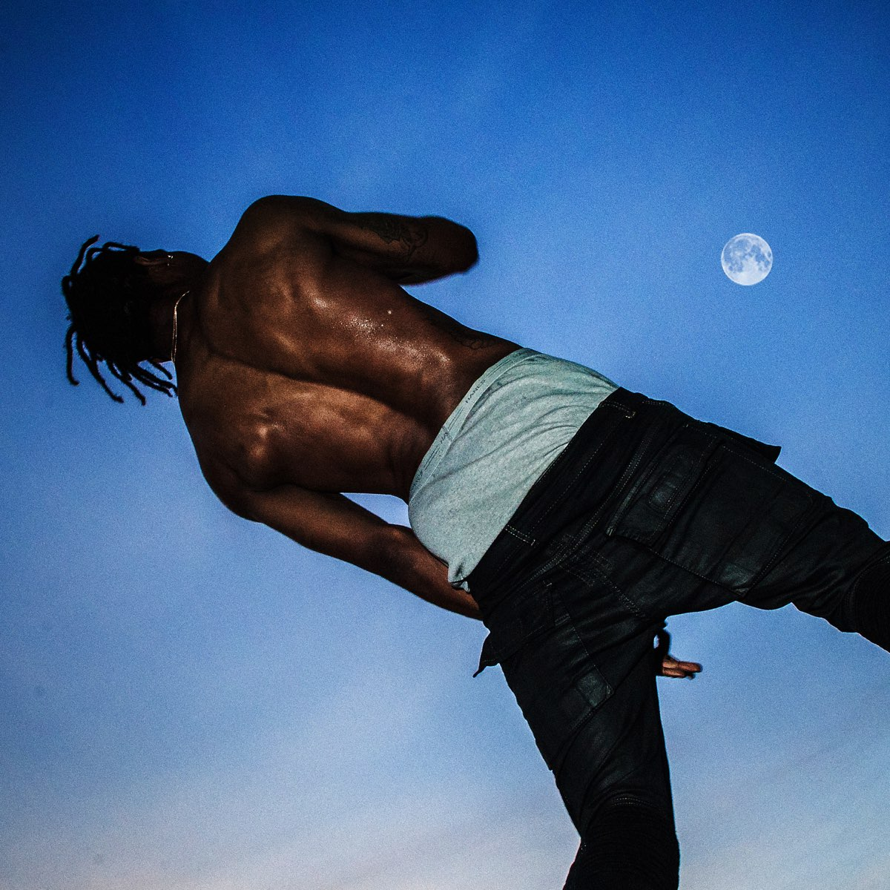
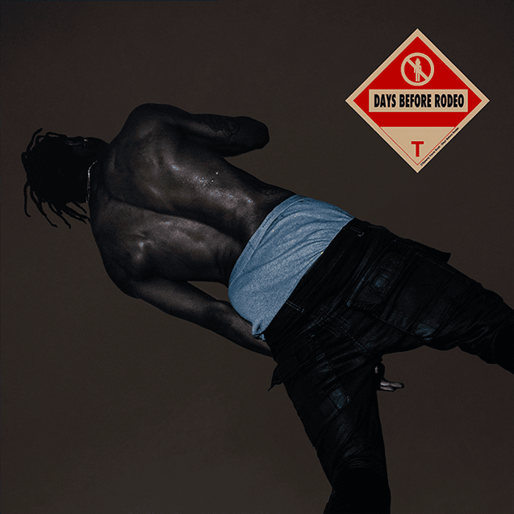

Travis Scott
Days Before Rodeo
the first album
Esse foi o primeiro album que Jacques Webster, Travis Scott lançou para a midia
Letras em VERMELHO são Músicas Ruins, e músicas em roxo sao Perfeitas.

The Prayer
Mamacita
Drugs You Should Try It
Don't Play
Skyfall
Zombies
Sloppy Toppy
Basement Freestyle
Backyard
Gray
